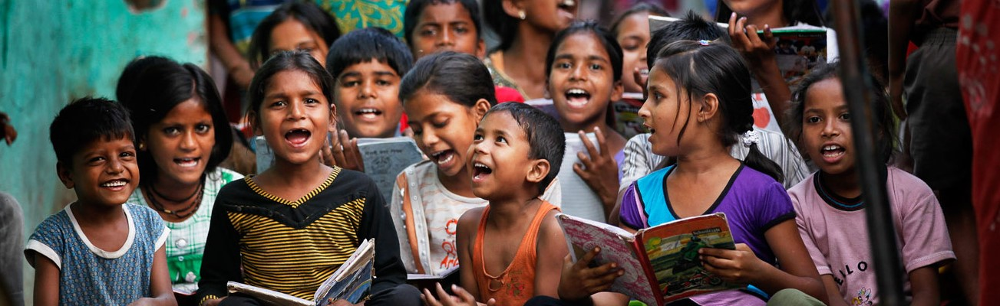

1/6
2 / 6
3 / 6

4 / 6
5 / 6
6/ 6

NGO for poor child's education, live welfare projects on education, healthcare & livelihood
In all over 2000 remote villages and slums across the globe.
We work intensively through focused welfare projects in four major areas
child education for poor children, healthcare for families, skills training and livelihood for youth So far,
we have been able to directly impact the lives of over 1 million children and families.
Work as a catalyst in bringing sustainable change in the lives of underprivileged children, youth and women, with a life-cycle approach of development.
Enable the civil society across the world to engage proactively in the change process through the philosophy of civic driven change.
Adopt highest standards of governance to emerge as a leading knowledge and technology driven, innovative and scalable international development organisation.
Children are the future of a nation. But education for children cannot be achieved without ensuring the welfare of the family.
beginning in the corridors of education, has adopted a lifecycle approach with intensive programmes focused on family health, livelihood and community engagement through women empowerment, which addresses the needs of less privileged children, their families and the larger community.our projects focus on
1.Healthcare
2.Livelihood
3.Education
A non-profit organization in india is to empower underprivileged children, youth and women through relevant education, innovative healthcare and market-focused livelihood programmes.
Our Foundation is to deploy best possible methodology and technology for achieving ideal SROI to practice and promote good governance. To link business competitiveness of the corporate with social development initiatives also to sensitize privileged children, youth and citizens in general to promote Civic Driven Change.
Mission : Education.Livelihood.Healthcare
Trust us with your money - "DONATE.HELP.SAVE A CHILD".

That backdrop set our preliminaries for Plate Half Full. This initiative is to enhance education with adequate nutrition.
This initiative also aims to sensitize the teachers and families on the need of proper nutrition.
Most of us have our plates full and most of us only have our plates half full! Let us come together, fill the plates of those children who have been surviving on halves!
For lakhs of such children, education has come to a halt. They can't afford smart phones, can't count on support of parents for home learning.
Shiksha Na Ruke is a initiative that is providing underprivileged children access to continuous learning. Despite everything, they have not given up on education, they continue to dream. Join hands with us to help these little dreamers continue their education.
Health Camps provide healthcare services to larger communities and offer multi-disciplinary healthcare through a team of specialized doctors.
Telemedicine or e-clinics overcome the scarcity of doctors in remote rural locations. For every 10 on ground clinics with paramedics there is 1 digital clinic with a doctor covering many communities.
A unique tele-counselling initiative that provides emotional, physical and psychological support in the times of Covid-19. Our aim is to reach 200,000 children and families through this.
In keeping with its philosophy of 'Real Work Real Change', an NGO in Delhi, India to support the underserved, has taken its intervention into the interiors of India, reaching the unreached in the remotest of rural areas and urban slums with our services and making this helping foundation in India, the best NGO in India.


"Small charities can bring bigger impacts Help someone's dream come true".